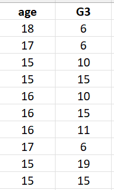
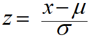
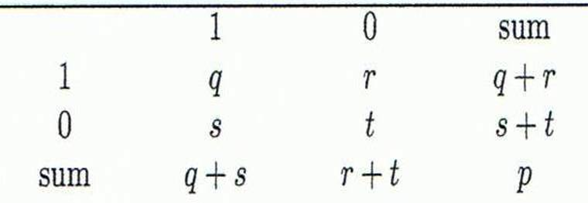
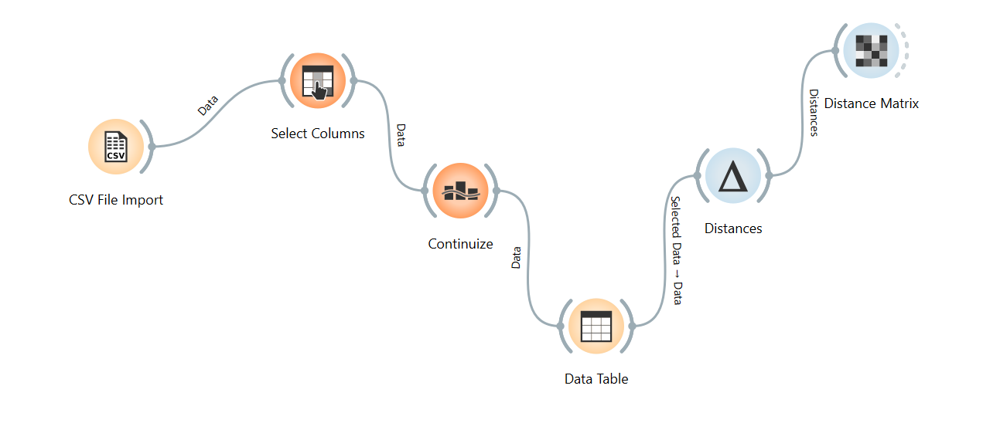
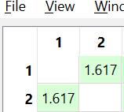

Dataset Student Performance#
Dataset yang digunakan dalam perhitungan jarak adalah Student Alcohol Consumption Dataset yang berisi informasi mengenai karakteristik siswa serta faktor-faktor yang mempengaruhi performa akademik mereka. Dataset ini digunakan untuk menganalisis perilaku belajar dan prestasi siswa.
Dataset ini memiliki berbagai atribut yang menggambarkan kondisi demografis, dukungan keluarga, serta kebiasaan belajar siswa. Namun, tidak semua atribut digunakan dalam perhitungan jarak ini. Untuk mempermudah proses analisis dan perhitungan jarak antar data, hanya beberapa atribut yang dipilih sebagai representasi dari beberapa tipe data.
Atribut yang digunakan dalam penelitian ini terdiri dari atribut numerik, ordinal, kategorikal, dan biner. Pemilihan atribut ini bertujuan untuk menunjukkan bagaimana metode perhitungan jarak dapat diterapkan pada data dengan tipe atribut yang berbeda.
Atribut Yang Digunakan#
Atribut |
Tipe Data |
Keterangan |
|---|---|---|
age |
Numerik |
Umur siswa |
studytime |
Ordinal |
Waktu belajar siswa (1–4) |
school |
Kategorikal |
Sekolah siswa (GP atau MS) |
sex |
Biner |
Jenis kelamin siswa |
internet |
Biner |
Akses internet di rumah |
famsup |
Biner |
Dukungan pendidikan dari keluarga |
G3 |
Numerik |
Nilai akhir siswa |
Selanjutnya, data yang telah dipilih akan melalui tahap transformasi data sebelum dilakukan perhitungan jarak antar objek.
Transformasi Data#
Data Numerik#
Pada dataset ini atribut yang memiliki tipe data numerik adalah age dan G3. age merepresentasikan umur dari siswa dan G3 merepresentasikan nilai akhir dari siswa. Berikut 10 data pertama dari atribut numerik.

Sebelum menghitung jarak akan dilakukan normalisasi pada data bertipe numerik terlebih dahulu, supaya setiap atribut memiliki skala yang sebanding. Normalisasi akan dilakukan menggunakan Z-score.

Keterangan :
\(z_i\) : nilai hasil normalisasi data ke-\(i\)
\(x_i\) : nilai data ke-\(i\)
\(\mu\) : mean (rata-rata) dari atribut
\(\sigma\) : standard deviation dari atribut
age#
Normalisasi age menggunakan z-score, sebagai berikut:
Mean
\(\mu = \frac{1}{n}\sum_{i=1}^{n} x_i\)
Dari perhitungan yang telah dilakukan pada atribut age yang memiliki jumlah data 395 diperoleh mean \(16.70\)
Standart Deviasi
\(\sigma = \sqrt{\frac{1}{n}\sum_{i=1}^{n}(x_i-\mu)^2}\)
Dari perhitungan standart deviasi yang telah dilakukan pada atribut age, mendapatkan nilai \(1.27\)
G3#
Normalisasi G3 menggunakan z-score, sebagai berikut:
Mean
\(\mu = \frac{1}{n}\sum_{i=1}^{n} x_i\)
Dari perhitungan yang telah dilakukan pada atribut G3 yang memiliki jumlah data 395 diperoleh mean \(10.42\)
Standart Deviasi
\(\sigma = \sqrt{\frac{1}{n}\sum_{i=1}^{n}(x_i-\mu)^2}\)
Dari perhitungan standart deviasi yang telah dilakukan pada atribut age, mendapatkan nilai \(4.58\)
Setelah diperoleh nilai mean dan standart deviasi pada atribut age dan G3, langkah selanjutnya akan dilakukan normalisasi pada beberapa data age dan G3 menggunakan metode z-score.
Contoh Normalisasi atribut age:
Data 1
\(x_1 = 18\)
\(\mu = 16.70\)
\(\sigma = 1.27\)
Data 2
\(x_2 = 17\)
\(\mu = 16.70\)
\(\sigma = 1.27\)
Data 3
\(x_3 = 15\)
\(\mu = 16.70\)
\(\sigma = 1.27\)
Contoh Normalisasi atribut G3:
Data 1
\(x_1 = 6\)
\(\mu = 10.42\)
\(\sigma = 4.58\)
Data 2
\(x_2 = 6\)
\(\mu = 10.42\)
\(\sigma = 4.58\)
Data 3
\(x_3 = 10\)
\(\mu = 10.42\)
\(\sigma = 4.58\)
Hasil Normalisasi :
Data |
Age |
Z-score Age |
G3 |
Z-score G3 |
|---|---|---|---|---|
Data 1 |
18 |
1.02 |
6 |
-0.96 |
Data 2 |
17 |
0.23 |
6 |
-0.96 |
Data 3 |
15 |
-1.33 |
10 |
-0.09 |
Data Ordinal#
Atribut ordinal adalah atribut yang memiliki tingkatan atau urutan, sehingga nilainya dapat dibandingkan berdasarkan tingkatannya. Pada dataset Student Performance, atribut yang bersifat ordinal adalah Studytime, karena nilainya menunjukkan tingkatan waktu belajar.
Keterangan :
\(r_{if}\) : ranking dari nilai ordinal
\(M_f\) : jumlah kategori pada atribut ordinal
\(z_{if}\) : nilai hasil transformasi
Untuk \(r_{if}\) adalah menggantikan \(x_{if}\) yaitu nilai atribut ke \(f\) pada data ke \(i\).
Pada atribut Studytime ini memiliki 4 tingkatan, yaitu 1 - 4.
Contoh perhitungan
Pada dataset Student Performance atribut Studytime untuk data ke 1 - data ke 3 memiliki nilai yang sama yaitu \(2\), jadi untuk contoh perhitungan ini akan menggunakan data yang berbeda.
Data 1
\(r_{if} =2\)
\(M_{if} =4\)
Data 2
\(r_{if} =2\)
\(M_{if} =4\)
Data 3
\(r_{4} =3\)
\(M_{if} =4\)
Data 4
\(r_{13} =1\)
\(M_{if} =4\)
Hasil Perhitungan:
Data |
(r_{if}) |
(z_{if}) |
|---|---|---|
Data 1 |
2 |
0.33 |
Data 2 |
2 |
0.33 |
Data 3 |
3 |
0.66 |
Data 4 |
1 |
0 |
Data Kategorical#
Pada atribut school memiliki tipe data kategorical, dan ini akan dihitung menggunakan simple matching.
Keterangan:
\(d(i,j)\) = jarak antara objek \(i\) dan \(j\)
\(p\) = jumlah atribut nominal yang dibandingkan
\(m\) = jumlah atribut yang nilainya sama (matching)
Karena kita hanya menggunakan 1 atribut yaitu school, maka \(p = 1\).
Untuk atribut school data ke 1 - data ke 349 memiliki kategori \(GP\), jadi untuk memperhitungkan supaya hasilnya beda nanti juga akan memperhitungkan dengan data ke 350.
Contoh Perhitungan:
Jarak Data 1 dan Data 2
school sama (GP = GP)
\(m = 1\)
\(p = 1\)
Artinya tidak ada perbedaan
Jarak Data 2 dan Data 350
school sama (GP ≠ MS)
\(m = 0\)
\(p = 1\)
Artinya berbeda sepenuhnya
Jarak Data 1 dan Data 350
school sama (GP ≠ MS)
\(m = 0\)
\(p = 1\)
Artinya berbeda sepenuhnya
Hasil Perhitungannya:
Pasangan Data |
School |
Jarak (d) |
Interpretasi |
|---|---|---|---|
Data 1 & Data 2 |
GP = GP |
(0) |
Tidak ada perbedaan |
Data 2 & Data 350 |
GP ≠ MS |
(1) |
Berbeda sepenuhnya |
Data 1 & Data 350 |
GP ≠ MS |
(1) |
Berbeda sepenuhnya |
Data Biner#
Pada dataset Student Performance yang memiliki atribut bertipe data biner adalah sex, famsup, dan internet. Untuk atribut sex yang memiliki nilai F/M ini merupakan symmetric binary, atribut famsup dan internet yang memiliki nilai yes/no ini merupakan asymmetric binary.
Untuk menghitung jarak menggunakan rumus symmetric dan asymmetric harus dirubah menjadi encoding dulu ke 0/1.
Encoding Data
Atribut |
Tipe |
Data Asli |
Encoding 0/1 |
|---|---|---|---|
Sex |
symmetric |
F = Data 1, M = Data 6 |
F=1, M=0 |
Famsup |
asymmetric |
Yes / No |
Yes=1, No=0 |
Internet |
asymmetric |
Yes / No |
Yes=1, No=0 |
Jarak untuk symmetric binary (perbedaan 0 sama pentingnya dengan 1) sedangkan Jarak untuk asymmetric binary (hanya 1 yang penting)
Rumus perhitungan:#

Kondisi |
Arti |
|---|---|
q |
kedua data sama dan bernilai 1 |
r |
data i =1 dan data j =0 |
s |
data i =0 dan data j =1 |
t |
kedua data sama dan bernilai 0 |
Contoh Perhitungan
Data 1
Di sini akan dibandingkan data ke 1 dengan data ke 2
Atribut |
Data 1 |
Data 2 |
|---|---|---|
Sex |
F |
F |
Famsup |
No |
Yes |
Internet |
No |
Yes |
Data setelah konversi dengan encoding
Atribut |
Tipe |
Data 1 |
Data 2 |
|---|---|---|---|
Sex |
symmetric |
1 |
1 |
Famsup |
asymmetric |
0 |
1 |
Internet |
asymmetric |
0 |
1 |
Perhitungan Symmetris (sex)
Jadi, jarak Symmetris pada data ke 1 dan data ke 2 = \(0\)
Perhitungan Asymmetris (famsup dan internet)
Jadi, jarak Asymmetris pada data ke 1 dan data ke 2 = \(1\)
Data 2
Di sini akan dibandingkan data ke 1 dengan data ke 6
Atribut |
Data 1 |
Data 6 |
|---|---|---|
Sex |
F |
M |
Famsup |
No |
Yes |
Internet |
No |
Yes |
Data setelah konversi dengan encoding
Atribut |
Tipe |
Data 1 |
Data 6 |
|---|---|---|---|
Sex |
symmetric |
1 |
0 |
Famsup |
asymmetric |
0 |
1 |
Internet |
asymmetric |
0 |
1 |
Perhitungan Symmetris (sex)
Jadi, jarak Symmetris pada data ke 1 dan data ke 6 = \(1\)
Perhitungan Asymmetris (famsup dan internet)
Jadi, jarak Asymmetris pada data ke 1 dan data ke 6 = \(1\)
Perhitungan Jarak#
Setelah seluruh atribut ditransformasikan ke dalam bentuk numerik, langkah selanjutnya adalah menghitung jarak antar data menggunakan Euclidean Distance. Metode ini digunakan untuk mengukur tingkat kemiripan antara dua objek berdasarkan seluruh atribut yang dimiliki.
Rumus Euclidean Distance :
Keterangan :
\(d(i,j)\) : jarak antara data ke-\(i\) dan data ke-\(j\)
\(x_{if}\) : nilai atribut ke-\(f\) pada data ke-\(i\)
\(x_{jf}\) : nilai atribut ke-\(f\) pada data ke-\(j\)
\(p\) : jumlah atribut
Perhitungan jarak dari setiap atribut pada data 1 dan data 2:
Atribut |
Jarak |
|---|---|
Age |
0.79 |
G3 |
0 |
Studytime |
0 |
School |
0 |
Sex |
0 |
Famsup |
1 |
Internet |
1 |
Selanjutnya, subtitusikan ke rumus euclidean distance untuk mendapatkan jarak dari keseluruhannya
Hasil akhir jarak Euclidean antara data 1 dan data 2 adalah sekitar \(1.62\)
Implementasi Orange#
Setelah dilakukannya perhitungan manual untuk menghitung jarak dari dataset Student Performance dari data 1 dan data 2, maka berikut implementasi dari orangenya.

Matriks Jaraknya diperoleh:

Pada orange untuk matriks \(d(1,2)\) diperoleh \(1.617\) tetapi pada perhitungan manual kemarin mendapatkan nilai \(1.62\) ini dikarenakan pada orange untuk atribut studytime yang bertipe data ordinal terhitung sebagai tipe data numerik, jadi dihitung normalisasi menggunakan z-score.